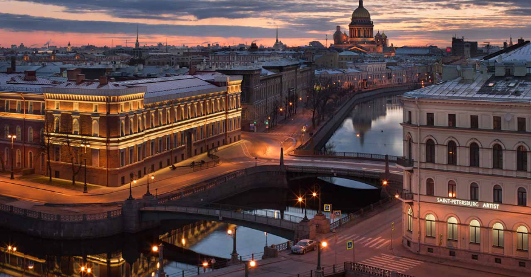

Санкт-Петербургская ассоциация международного сотрудничества одна из массовых организаций общественной дипломатии, которая занимает достойное место в системе международных связей города.
Ассоциация международного сотрудничества является правопреемником Всероссийского общества культурных связей с заграницей (ВОКС), основанного в 1925 году. В 1950-е годы, когда шел активный процесс создания Обществ дружбы с зарубежными странами, правопреемником ВОКС стал Союз советских обществ дружбы и культурной связи с зарубежными странами (ССОД).
Ассоциация активно сотрудничает с исполнительной и законодательной властью Санкт-Петербурга и Ленинградской области, в первую очередь, с Комитетом по внешним связям Санкт-Петербурга и Законодательным собранием Санкт-Петербурга, Российской ассоциацией международного сотрудничества (Москва), Россотрудничеством, Представительством МИД РФ в Санкт-Петербурге, генеральными консульствами, институтами культуры зарубежных стран, учреждениями культуры и образования, общественными организациями. Важным ресурсом являются многолетние и прочные связи Ассоциации и обществ дружбы с партнерскими организациями за рубежом.
Международная деятельность Ассоциации объединяет и координирует ресурсы общественной дипломатии, гражданского общества с усилиями государственный органов в создании и укреплении атмосферы доверия по отношению к России.
Деятельность Ассоциации направлена на продвижение интересов России в мире, защиту исторического и национального достоинства страны, формирование интереса у зарубежной общественности к русской истории, культуре и языку.
Развивая разносторонние контакты со странами ближнего и дальнего зарубежья, сотрудники и члены Ассоциации осуществляют программы по ознакомлению зарубежной общественности с богатейшим культурным наследием Петербурга – культурной столицы России, центра образования, науки и туризма, города с высоким уровнем деловой, политической и общественной активности.
Диапазон деятельности Ассоциации поистине широк: это образовательные обмены и культурные программы и акции, среди которых фестивали Санкт-Петербурга за рубежом и фестивали культур народов других стран в Санкт-Петербурге, развитие связей с городами-побратимами Санкт-Петербурга, участие в «перекрестных годах» национальных культур. Традиционно отмечаются государственные праздники, юбилейные и памятные даты зарубежных стран. В Доме дружбы проходят международные конференции и семинары по актуальным проблемам современности, выставки, концерты, страноведческие лектории. Большое внимание уделяется ознакомлению петербургской общественности с историей, традициями, культурой и современной жизнью зарубежных стран.
Международная деятельность Ассоциации вызывает отклик в среде молодых петербуржцев, которые проявляют большой интерес к мероприятиям, ориентированным на их участие в движении народной дипломатии, в том числе в реализации таких проектов, как «Школа молодого дипломата», «Будущие лидеры» в рамках международные конкурсов ораторского мастерства и политических дебатов и другие.
Ассоциация международного сотрудничества также осуществляет благотворительные программы помощи и поддержки ветеранам войны, жителям блокадного Ленинграда, детям, оставшимся без попечения родителей.
Высокий уровень представительности актива, разнообразие форм и направлений деятельности Санкт-Петербургской ассоциации международного сотрудничества позволяют ей занимать прочные позиции среди активно действующих институтов гражданского общества.